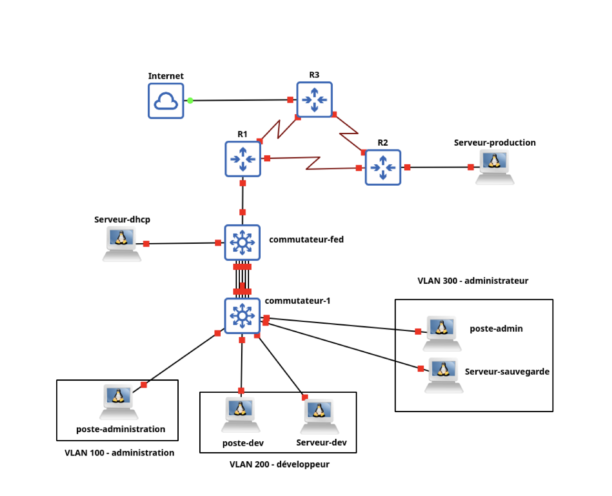

Durant cette SAE j'ai du faire du passer par de nombreuse étapes comme, le découpe ip pour les vlan, les configuration switch/routeur, etc...
Voici un aperçus du résultat final:

Apprentissages critiques :
AC11.02 | Comprendre l’architecture et les fondements des systèmes numériques, les principes du codage de l’information, des communications et de l’Internet
AC11.03 | Configurer les fonctions de base du réseau local
AC11.04 | Maîtriser les rôles et les principes fondamentaux des systèmes d’exploitation afin d’interagir avec ceux-ci pour la configuration et l’administration des réseaux et services fournis
AC11.05 | Identifier les dysfonctionnements du réseau local et savoir les signaler
AC11.06 | Installer un poste client, expliquer la procédure mise en place